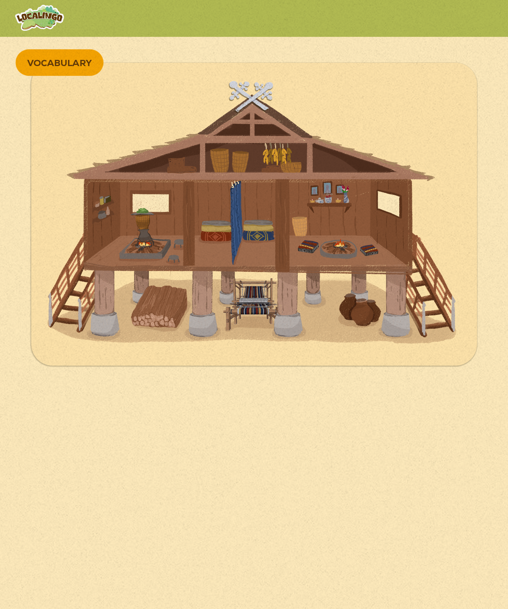

There's more to discover
Discover surprising stories about the land, people and culture of Moc Chau, Son La.
Five little discoveries · Mộc Châu
Question 1 of 5
Discover surprising stories about the land, people and culture of Moc Chau, Son La.

Tap a word to hear its English pronunciation.
Did you know that a long time ago, Thai people didn't know how to build houses? Legend says a clever man had a dream about a tortoise. The tortoise spoke to him and said, “Build your house like the shape of my shell, and hold it high on strong wooden legs!” Today, many traditional Thai roofs still curve gracefully just like a tortoise shell.
To enter a Thai stilt house, you have to climb up a wooden staircase. But you can't just have any number of steps! By tradition, a staircase must always have an odd number of steps, like 5, 7, or 9. Odd numbers are believed to bring good luck, health, and happiness to the families living inside.
Even though these houses are incredibly strong and can last for hundreds of years, they were originally built without using any metal nails! Instead, Thai builders are like master puzzle-makers. They carve the wood pieces so they fit perfectly together and tie the big beams tightly with strips of flexible bamboo and rattan.
Fact 1 of 3